OTT의 작동 원리
전달 방식 · 인코딩 · CDN
스포츠와 OTT
경기장 밖에서 시작되는 또 하나의 경기.
사진과 도표를 보고 핵심 질문에 자신의 근거를 붙여 설명해 보세요.
전달 방식 · 인코딩 · CDN
수익 구조 · 라이브 가치
권리 범위 · 비용 · 유지기간
지연 · 참여 · 접근성
개념 확인 · 근거 있는 제안
마지막에는 배운 개념을 근거로 계약 조건과 평가 지표를 직접 제안합니다.
도입 질문: “응원 팀의 중계가 다른 앱으로 옮겨가면 여러분도 이동할까요?” 손들기로 의견만 확인하고, 마지막 토론에서 처음의 판단을 다시 검토합니다.
스포츠 팬은 수동적인 시청자가 아니라, 자신의 욕구를 충족하기 위해 매체와 콘텐츠를 선택하는 능동적인 이용자입니다.
경기 결과, 선수 기록, 전술 분석을 알고 싶다.
실시간 경기의 긴장감과 재미를 경험하고 싶다.
팬들과 응원하고 소통하며 소속감을 느끼고 싶다.
같은 경기를 TV 대신 OTT로 선택하는 이유는 무엇일까요? 이용과 충족 이론의 관점에서 한 가지 욕구를 골라 설명해 보세요.
오늘의 연결: OTT의 전달 방식·팬 경험·중계권 전략은 팬의 서로 다른 이용 동기와 맞닿아 있습니다.
지난주 학습한 이용과 충족 이론을 복습합니다. '어떤 미디어가 사람에게 영향을 주는가'가 아니라 '사람이 왜 특정 미디어를 선택하는가'라는 질문으로 전환합니다. 정보·오락·사회적 상호작용은 설명을 위한 예시이며 이용 동기는 중첩될 수 있습니다. 학생에게 OTT 선택의 실제 이유를 한 문장으로 발표하게 한 뒤 다음 OTT 정의 슬라이드로 연결합니다.
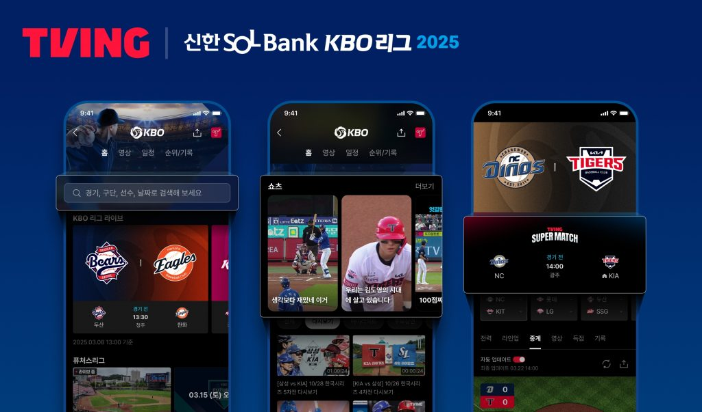
관찰 포인트같은 앱이 생중계와 짧은 영상, 경기 정보를 함께 제공합니다. OTT와 VOD는 동의어가 아닙니다.
인터넷을 통해 영상 서비스를 제공합니다.
진행 중인 경기 / 내가 고른 시간의 영상
전달 방식과 별개로 비용 구조를 설계합니다.
어떻게 전달하는가 / 언제 보는가 / 누가 비용을 내는가를 나누어 설명합니다.
기존 PDF 2~4쪽의 “인터넷 + TV” 설명을 확장합니다. OTT가 기존 통신망을 사용하지 않는다는 뜻은 아닙니다. 인터넷 접속 사업자와 영상 서비스 제공자의 역할을 구분하는 것이 핵심입니다.
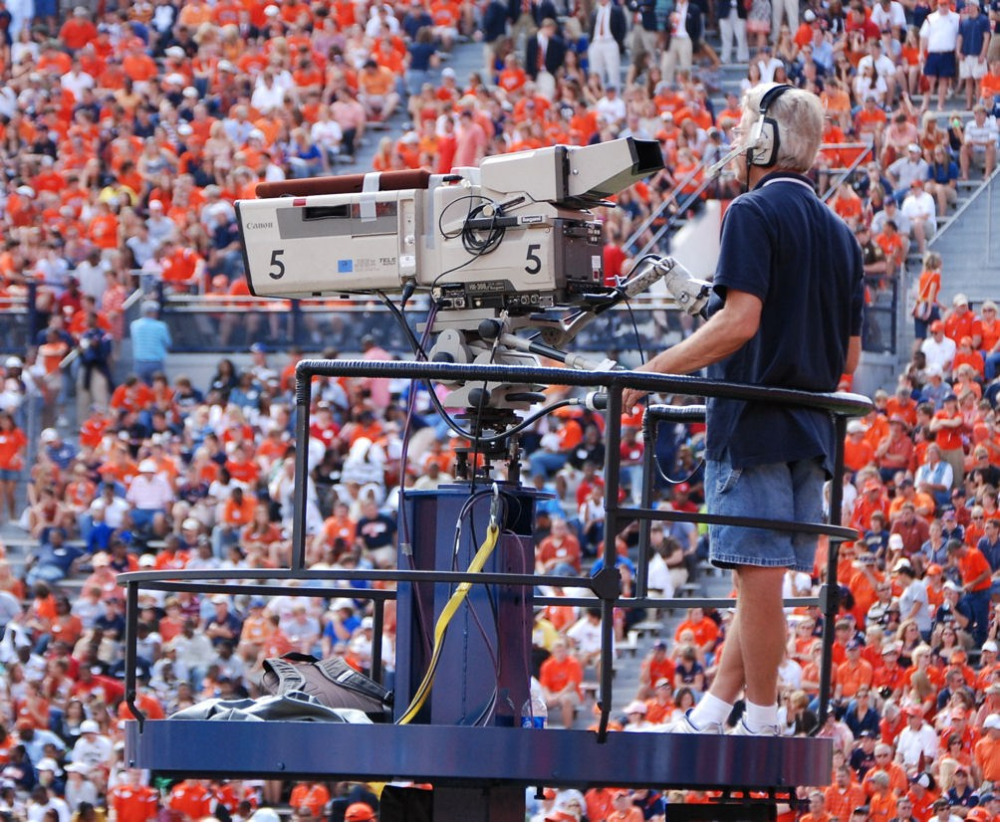
카메라·마이크의 신호를 모아 중계 화면을 제작합니다. 이 단계의 결과물이 인코더로 전달됩니다.
현장에 있는 카메라의 영상이 그대로 모든 시청자에게 전달될까요?
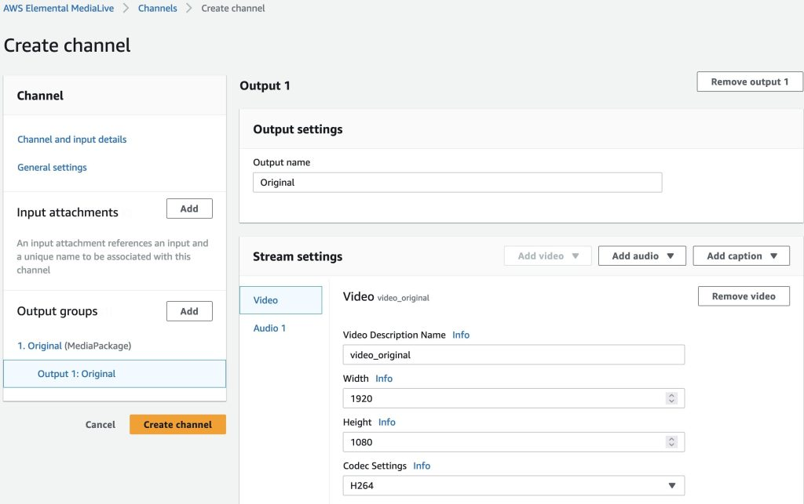
인코딩은 영상을 압축하고 여러 화질로 만듭니다. 패키징은 이를 재생용 조각과 목록으로 구성합니다. 사진은 AWS의 실제 인코딩 설정 화면입니다.
1920×1080과 코덱 설정은 원본 영상의 어떤 특성을 바꿀까요?
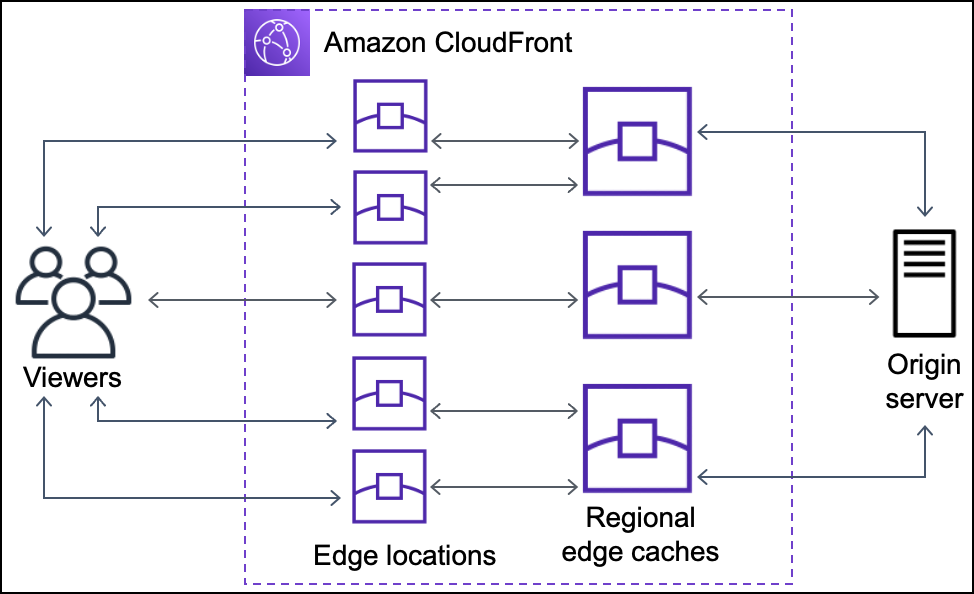
CDN(Content Delivery Network)은 여러 지역의 서버를 이용해 영상을 전달합니다. 이 자료는 서버 간 전달 구조를 설명하는 공식 도식입니다.
모든 시청자가 하나의 원본 서버에 접속하면 어떤 문제가 생길까요?
재생 버튼을 눌러 KBO 공식 경기 영상을 시청해 보세요. YouTube도 인터넷으로 영상을 전달하는 OTT의 한 사례입니다. 플레이어가 영상 조각을 받아 화면과 소리를 재생합니다. 적응형 비트레이트(ABR)는 연결 상태 등에 따라 화질을 조절해 끊김을 줄입니다.
네트워크가 느려질 때 최고 화질과 재생 지속 중 무엇을 우선할까요?
촬영 → 압축·분할 → 분산 전달 → 재생. 위 번호를 눌러 각 단계의 자료를 비교하세요.
각 단계의 번호를 눌러 실제 자료를 확인합니다. 촬영 30초, 인코딩·패키징 40초, CDN 40초, 플레이어·ABR 40초, 전체 연결 정리 30초입니다. CDN 자료는 사진이 아니라 공식 도식이라고 구분합니다. 플레이어는 KBO 공식 YouTube 경기 영상입니다. TVING 앱 화면이나 현재 생중계가 아니라 공개 경기 영상을 실제 인터넷 플레이어에서 재생하는 예시입니다. ABR은 일반 원리 설명이며 이 영상만으로 전환 성능을 측정하지 않습니다.
반복 시청이 수익의 기반.
시즌이 끝나면 해지를 고민합니다.
시청자의 관심이 광고 가치.
낮은 진입 장벽과 광고 경험을 조율합니다.
TVOD: VOD를 대여·구매합니다.
라이브 PPV: 특정 경기·이벤트를 구매합니다.
구독료 + 광고 등의 결합. 유료 구독이 언제나 광고 없는 시청을 뜻하지는 않습니다.
기존 PDF 5·7쪽의 AVOD·TVOD·SVOD·Hybrid 분류를 유지했습니다. 사업자 이름과 수익모델을 일대일로 고정하지 말고 요금제·콘텐츠 단위로 분류하게 합니다.
관찰 포인트메뉴와 콘텐츠 정보가 전환되는 실제 시연입니다. OTT 경쟁은 콘텐츠 수를 넘어 탐색 경험으로 확장됩니다.
모바일·스마트TV로 시청 장소 확장
오리지널·독점권으로 선택 유도
광고형 요금제·묶음 상품
스포츠와 이벤트로 동시 접속 형성
서로 대체되는 단계가 아니라, 겹쳐 발전하는 전략입니다.
과거 자료의 2025년 시장 전망치와 오래된 앱 이용자 순위를 현재 실적으로 제시하지 않습니다. 성장의 방향과 수익성의 문제를 구분해 설명합니다.
관찰 포인트추천과 탐색 메뉴가 화면에서 이동하는 과정을 보세요. 플랫폼은 콘텐츠뿐 아니라 발견 경로도 설계합니다.
다중면 시장: 연결된 집단의 수요와 가치가 서로 영향을 줍니다. 계약에 따라 구조는 달라집니다.
플랫폼 경제학의 다중면 시장 관점과 게이트키핑 관점을 적용한 분석입니다. MAU는 월간 활성 이용자, 유료 계정 수는 결제 단위, 동시접속은 한 시점의 부하입니다. 서로 다른 지표를 같은 크기의 시장으로 비교하면 안 됩니다. 추천·개인화의 편익과 편집 권력의 집중을 함께 봅니다.
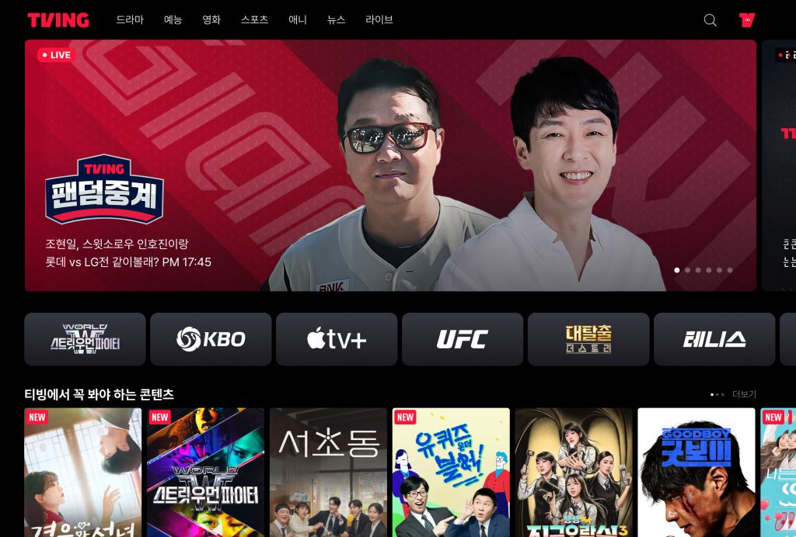
관찰 포인트경기뿐 아니라 “누구와 함께 보는가”도 선택 이유가 됩니다. 팬덤중계는 소속감과 대화의 사례입니다.
이용과 충족 관점:
필요에 따라 미디어를 선택합니다.
소속감·응원 → 팬덤중계·응원 채팅
버튼을 눌러 동기와 기능을 연결해 보세요.
가격·독점권·기기는 선택을 제약합니다.
이용과 충족 이론은 수용자를 자신의 필요에 따라 미디어를 선택하는 능동적 주체로 봅니다. 단, 모든 선택이 자유로운 것은 아닙니다. 가격·독점권·기기·접근성 같은 구조적 제약도 함께 분석합니다.
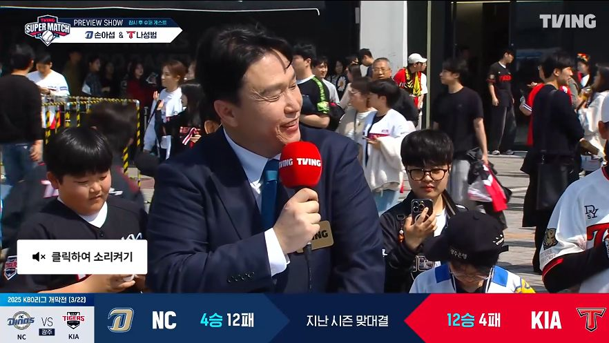
2025년 3월 22일 NC–KIA 슈퍼매치. 경기 전 방송에서 출연진이 관전 포인트를 전달하는 방식을 관찰합니다. 지난 시즌 상대 전적 그래픽과 경기 전 예측을 비교하세요.
해설은 시청자가 경기에서 주목할 대상을 어떻게 정하나요?
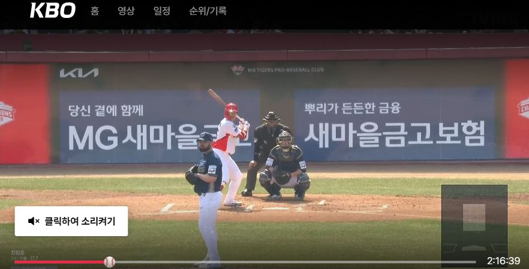
같은 경기의 중계 다시보기입니다. 점수·장면·해설이 함께 전달되는 모습을 비교하세요. 현재 생중계가 아니라 당시 방송의 기록입니다.
득점 직전과 직후, 화면과 해설은 몰입을 어떻게 만드나요?
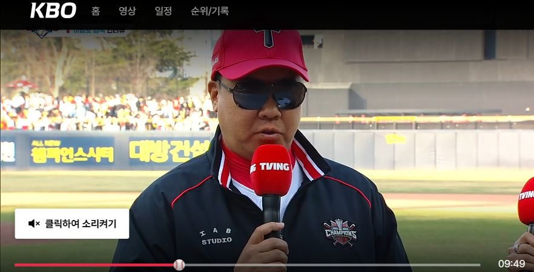
같은 경기의 경기 후 방송 중 이범호 감독 인터뷰입니다. 경기 결과를 관계자가 해석하는 방식과 경기 전의 예측을 비교합니다.
경기 전의 예상과 결과를 연결하려면 어떤 장면이나 설명이 필요한가요?
기대 형성 → 동시 반응 → 해석·공유. 영상은 TVING 공식 페이지에서 재생하며 이용 조건이 적용될 수 있습니다.
동일 경기의 전·중·후 공식 영상입니다. 추천 구간: 프리뷰 클립 00:20–00:35(상대 전적·예측), 중계 34:42–34:57(투구·타석), 퇴근길 04:56–05:11(이범호 감독 인터뷰). 화면과 재생은 확인했으며 발언 전문은 전사하지 않았습니다. 수업 전 해당 구간을 준비하고 음성을 확인하세요. 도입 15초, 각 장면 관찰 25초씩, 가치 비교 30초로 2분을 운영합니다. 외부 플레이어 정책으로 강의 안에 직접 삽입되지 않으며 썸네일 아래 링크로 엽니다. 현재 생중계라고 설명하지 않습니다.
지역·매체·기간·영상 형태를 분리해서 읽기
무엇을 독점하는지 확인해야
플랫폼 간 권리를 비교할 수 있습니다.
한국 / 특정 국가 / 글로벌
방송 TV / 인터넷 / 모바일
몇 시즌 / 전 경기 / 일부 패키지
라이브 / 다시보기 / 하이라이트
재판매 허용 / 팬 데이터 확보
디지털 독점권이 모든 TV 중계의 독점을 뜻하지는 않습니다.
아닙니다. 매체·지역·기간·경기 범위를 확인해야 합니다. 라이브 독점과 쇼츠 유통 확대는 공존할 수 있습니다. 수업에서는 구체적인 계약·발표에 한정해 해석하고, 모든 종목에 일반화하지 않습니다.
2024–2026년, 3년 총 계약 금액.
국내 유무선 중계방송권 및 재판매권.
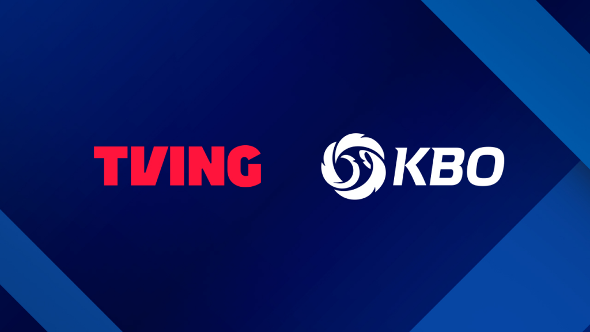
관찰 포인트공식 계약 발표 자료입니다. 권리료와 권리 범위를 함께 읽습니다.
연평균 환산값이며 실제 연도별 지급 일정은 아닙니다.
근거: KBO 2024.03.04 발표.
권리 수입의 증가가
팬 경험의 개선으로 이어지려면?
KBO 발표에는 팬 쇼츠 활용 확대 등 유통 활성화 방안도 포함됩니다. 다만 개별 영상 재사용의 조건은 별도 정책 확인이 필요하므로 “모든 영상이 자유 이용”이라고 설명하지 않습니다. 2027년 이후 계약은 이 수업의 확인 범위 밖입니다.
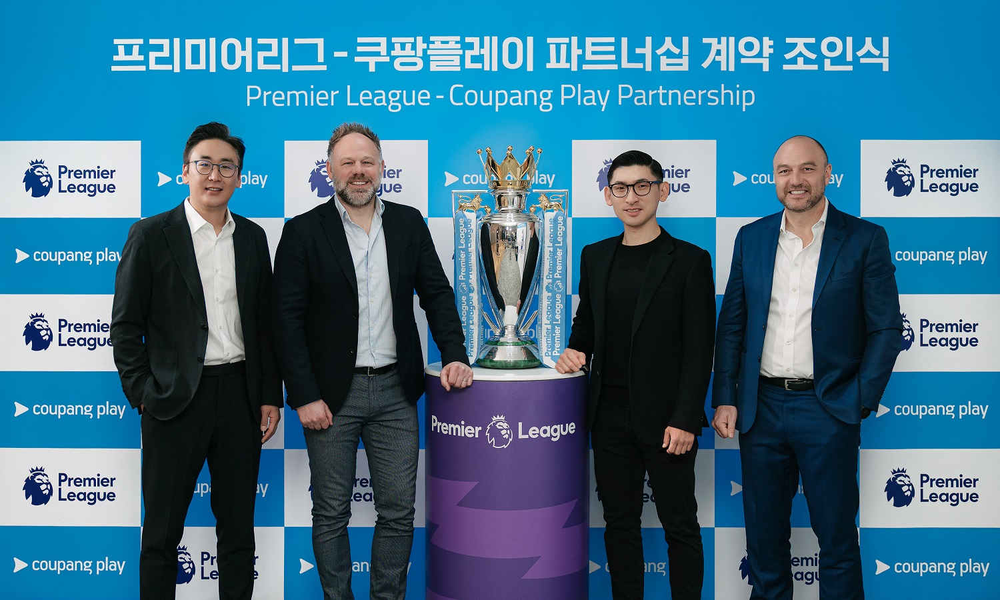
관찰 포인트리그 단위의 권리 확보는 팬이 시즌 내내 돌아오는 이유를 만듭니다. 사진은 실제 계약 조인식입니다.
2025/26 시즌부터 국내 전 경기 독점 생중계 발표.
시즌의 반복 일정 → 정기 접속 → 팬의 습관
공식 발표 확인 ↗위 버튼으로 세 사례를 비교합니다. 전략은 강의용 해석이며 수익 개선의 증거는 아닙니다.
| 사례 | 편성·권리 | 기대 접속 습관(해석) |
|---|---|---|
| 쿠팡플레이 × PL | 2025/26부터 국내 전 경기 독점 생중계 발표 | 시즌 내 반복 접속 |
| Prime Video × NBA | 2025/26부터 11년 계약 · 지역/경기 범위 구분 | 정기 편성과 기능 차별화 |
| Netflix × NFL | 2026년 라이브 편성 확대 발표 · 사진은 2024년 | 특정일 동시 접속 |
“가장 많은 중계권을 확보한 회사가 반드시 이긴다”는 주장을 비판하게 합니다. 팬 규모, 권리 비용, 광고, 기존 가입자와의 중복, 지역별 유통 조건이 달라 단순 비교가 어렵습니다.
3분 중 마지막 30초는 “시즌 단위 편성과 특정일 이벤트 중 비시즌 유지가 더 어려운 쪽은 무엇이며 어떤 자료가 필요한가?”를 묻습니다. 전체 읽기에는 세 사례의 요약표가 제공됩니다.
권리료 ÷ (월 공헌이익 × 유지 개월)
공헌이익 = 월 매출 − 해당 이용자의 변동비(가정).
제작비·고정비·광고·기존 고객 유지 효과를 제외한 권리료 충당 모형.
| 항목 | 값 · 설명 |
|---|---|
| 연간 중계권료 (기본값) | 450억 원 |
| 1인당 월 공헌이익 (기본값) | 5,000원 |
| 계산 공식 | 권리료 ÷ (월 공헌이익 × 유지 개월) |
| 12개월 유지 시 필요 가입자 | 750,000명 |
| 6개월 유지 시 필요 가입자 | 1,500,000명 |
| 모형의 한계 | 제작비·고정비·광고·기존 고객 유지 효과 제외, 인과추정 아님 |
가입자 수만큼,
유지기간이 중요합니다.
월 공헌이익은 가입자 1명의 월 매출에서 그 이용에 따른 변동비를 뺀 금액이라는 가정입니다. 구독료나 매출 그 자체가 아닙니다. 20초 예상 → 40초 슬라이더 조작 → 40초 6개월/12개월 비교 → 20초 모형의 한계 정리로 진행합니다.
기본값은 450억 원 ÷ (5,000원 × 12개월) = 75만 명입니다. 6개월 유지면 150만 명입니다. 막대는 6개월을 100%로 둔 상대 비교이므로 권리료를 바꾸면 숫자는 달라져도 비율은 일정합니다. 실제 추가 유입의 인과 추정이나 전체 손익분기점이 아닌 단순 권리료 충당 모형입니다.
신규 유료 가입
유입 경로별 전환율재생 시작·끊김·지연
재생 성공률 / 지연시간다음 달 재이용·비시즌
재구독률 / 해지율공헌이익·광고·팬 만족
이용자당 매출 / 만족도| 단계 | 질문 | 지표 |
|---|---|---|
| 01 획득 | 누가 들어왔나? | 신규 유료 가입, 유입 경로별 전환율 |
| 02 경험 | 잘 볼 수 있었나? | 재생 성공률 / 지연시간 |
| 03 유지 | 다시 돌아왔나? | 다음 달 재이용 재구독률 / 해지율 |
| 04 가치 | 무엇이 남았나? | 이용자당 매출(ARPU) / 만족도 |
같은 기간·비슷한 고객 집단을 비교해야 합니다. 오래 남았다는 사실만으로 스포츠의 인과효과를 단정할 수는 없습니다.
사례 분석 질문: “스포츠를 본 사람이 더 오래 남았다”는 사실만으로 스포츠가 유지율을 높였다고 단정할 수 있을까요? 원래 충성도가 높은 사람이 스포츠도 더 많이 봤을 가능성을 함께 제시합니다.
현장 화면의 골 알림과 내 화면의 골 장면 사이를 비교하세요.
직접 제작한 교육용 애니메이션입니다. 같은 파일의 재생 시작을 늦춘 지연 모형이며, 실제 중계·특정 서비스 실측이나 버퍼링 재현이 아닙니다.
낮은 지연과 안정성은 기술적으로 함께 개선할 수 있지만, 버퍼 크기 등 운영 설정에는 절충이 생길 수 있습니다. 예시의 3초·25초가 보편적인 업계 기준이라는 뜻은 아닙니다.
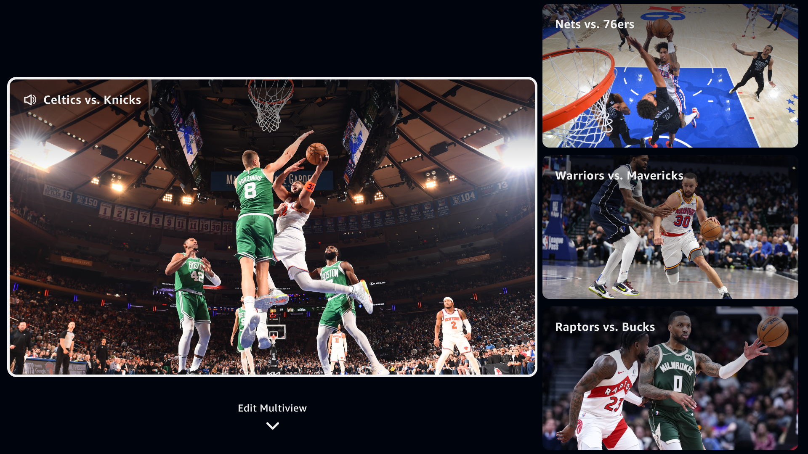
Prime Video의 NBA 멀티뷰 소개 화면입니다. 관심 경기들을 동시에 볼 수 있지만 시선과 주의가 분산될 수 있습니다. 지원 지역·기기·구독 조건을 구분해야 합니다.
동시에 보는 경기 수가 늘면 놓치는 정보도 늘어날까요?
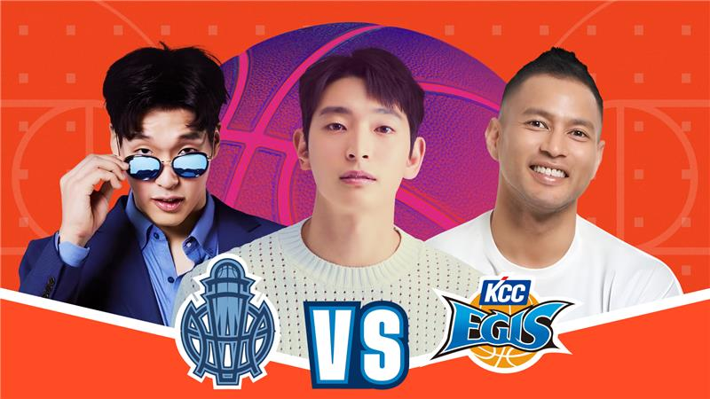
TVING 팬덤중계의 공식 홍보 사진입니다. 경기 영상 자체보다 출연진과 응원 관점이 선택 이유가 되는 사례입니다. 채팅창 화면은 아닙니다.
같은 경기라도 응원 관점이 다르면 누구에게 더 매력적일까요?
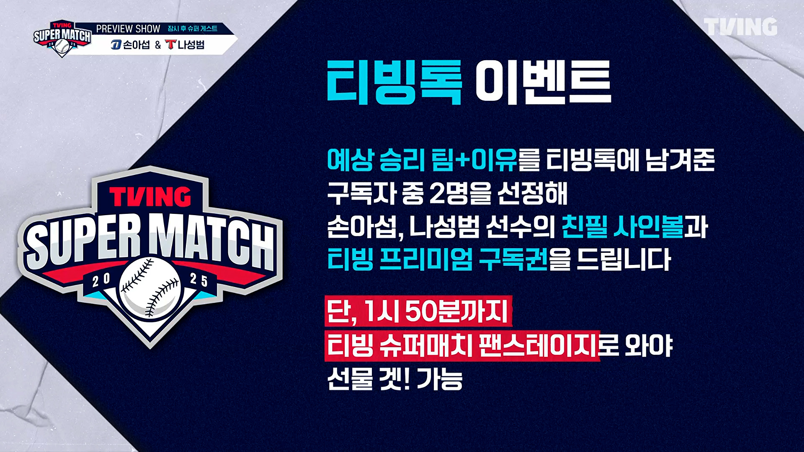
TVING 중계에서 승리 팀과 이유를 티빙톡에 남기도록 안내한 실제 방송 화면입니다. 채팅 참여를 유도하는 장면이며 채팅창 자체를 재현한 사진은 아닙니다.
채팅의 소속감을 살리면서 스포일러와 공격적 발언을 어떻게 줄일까요?
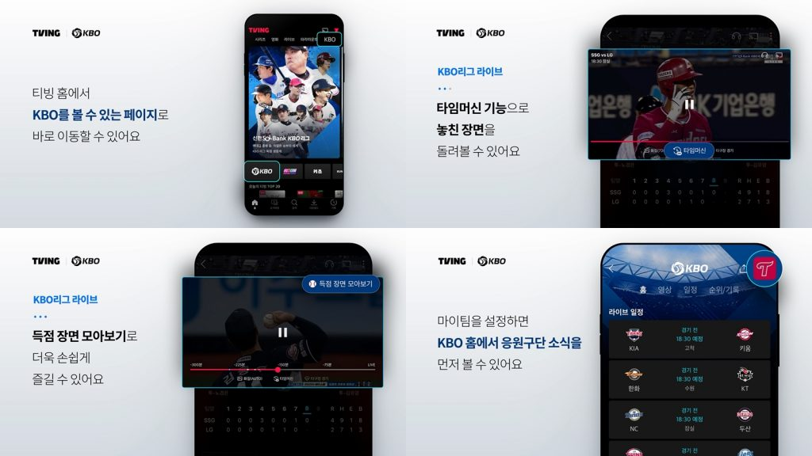
공식 이용 안내 화면의 득점 장면 모아보기와 마이팀 기능을 보세요. 클립 탐색과 이용자가 고른 팀 중심의 개인화 사례입니다. 자동 추천 알고리즘의 증거는 아닙니다.
탐색 시간이 줄어드는 대신 어떤 팀이나 장면이 덜 보이게 될까요?
각기 다른 서비스·시점의 사례입니다. 편리함과 함께 주의 분산·중재·노출 편중을 평가합니다.
네 기능의 자료를 차례로 열어 관찰합니다. 선택형 해설은 홍보 사진, 채팅은 참여 안내 방송 화면, 클립·마이팀은 이용 안내 UI라는 차이를 명시합니다. 편익뿐 아니라 각각의 제약을 한 가지씩 학생에게 말하게 합니다.
무료 공개 경기·요금 안내
쉬운 가입·기기 지원·도움말
안정적 재생·자막·장애 대응
방송 편성에 들지 못했던 종목도 팬을 만날 수 있습니다.
유료 독점, 복잡한 가입, 기기·네트워크 차이는 시청을 막을 수 있습니다.
“접근성 보장”을 선언하는 대신 무료 공개 범위·이용 지원·장애 대응을 구체적인 계약 조건으로 만듭니다.
공공성은 이 수업의 정책·윤리적 평가 기준입니다. 특정 경기의 무료 중계가 법적으로 의무라는 주장은 아닙니다. 무료 하이라이트, 일부 무료 경기, 접근성 기준, 서비스 장애 대응, 지역별 접근 조건 등 실행 가능한 대안을 제안하게 합니다.
가상의 대학 스포츠 리그. 안정적 수입과 신규 팬 확대를 함께 목표로 합니다.
비교 가정: 같은 계약 기간·경기 수이며 기본 제작비 부담은 동일합니다. 추가 조건에는 별도 비용이 발생할 수 있습니다.
모든 경기 유료 독점
플랫폼이 팬 데이터 보유
주 1경기 무료 · 하이라이트 개방
집계 데이터 공유
A 또는 B를 선택하면 예상 이점·위험·협상 조건과 평가 지표가 나타납니다. 모두 수업용 가정이며 정답은 하나가 아닙니다.
| 구분 | A · 유료 독점 | B · 일부 개방 |
|---|---|---|
| 연 중계권료 | 30억 원 | 20억 원 |
| 공개 범위 | 모든 경기 유료 독점 | 주 1경기 무료 · 하이라이트 개방 |
| 데이터 | 플랫폼이 팬 데이터 보유 | 집계 데이터 공유 |
| 예상 이점 | 안정적 수입으로 제작·운영 예산 계획이 쉬움 | 비가입자·신규 팬에게 도달할 기회 |
| 감수할 위험 | 유료 장벽으로 신규 팬 접점 감소, 플랫폼 데이터 의존 | 보장 수입이 연 10억 원 적고, 무료 시청이 유료 전환을 보장하지 않음 |
| 추가 협상 포인트 | 무료 하이라이트 범위 + 익명 집계 데이터 공유 | 무료 경기 좋은 시간대 + 제작 품질·최소 보장액 |
| 평가 지표 | 신규 팬 유입 + 다음 시즌 재구독률 | 무료 시청자 재방문율·유료 전환율 + 총수입 |
답변 틀: “A/B안을 선택하고, [조건 1]과 [조건 2]를 수정하며, [지표 1]로 성과를 평가한다.” 1분 선택 → 2분 조건 수정 → 1분 발표로 운영합니다.
평가 기준: 목표 적합성 / 조건의 실행 가능성 / 지표의 측정 가능성을 각각 확인합니다. 예: B안을 기반으로 무료 경기 시간대와 장애 보상 조건을 정하고, 신규 팬의 다음 경기 재방문율로 평가합니다. A와 B 중 미리 정한 정답은 없습니다.
01 OTT는 VOD만 제공한다.
02 디지털 독점권은 모든 TV 중계의 독점이다.
03 가입자가 늘었다면 중계권 투자는 성공이다.
각 문항 1분으로 진행합니다. ① 전달 방식과 시청 시점의 혼동: OTT는 라이브와 VOD를 모두 담을 수 있습니다. ② 권리 범위의 일반화: 디지털 권리와 방송 TV 권리는 다를 수 있습니다. ③ 가입과 수익의 혼동: 비용·유지기간·공헌이익을 함께 보아야 합니다. 정답 선택 후 오답의 원인을 한 문장으로 설명하게 합니다.
학습 목표는 개념을 실제 계약 조건에 전이하는 것입니다. 60초 작성, 40초 짝에게 근거 설명, 20초 보완합니다. 조건의 구체성·개념 연결·상충관계·지표의 측정 가능성을 확인합니다. 문장 생성은 형식 정리일 뿐 정답 판정이 아닙니다. 입력 내용은 서버로 전송하지 않습니다.
수업 목차에서 던진 질문을 다시 떠올리세요. 먼저 자신의 답을 생각한 다음 핵심 해설을 펼쳐 확인합니다.
인터넷 기반 전달로 기기·장소 선택이 유연해지고 다시보기, 멀티뷰, 팬 참여 같은 기능을 제공할 수 있습니다. 반면 네트워크 환경에 따른 지연·끊김도 고려해야 합니다.
반드시 그렇지는 않습니다. 플랫폼은 가입자 유입·유지 효과를 기대하지만 권리료 부담도 집니다. 팬은 서비스 개선의 혜택을 받을 수 있으나 구독료 상승과 접근 제한을 경험할 수도 있습니다.
가입자 수만이 아니라 재생 안정성, 지연시간, 팬 만족도·접근성, 가입자 유지율과 장기적인 수익성을 함께 검토해야 합니다. 평가 지표와 비교 기준을 명확히 제시해야 합니다.
핵심: 플랫폼의 경제적 지속가능성과 팬의 경험·접근성을 함께 고려해야 합니다.
목차의 질문 3개를 문구 그대로 되짚습니다. 매 질문마다 학생에게 15~20초 먼저 생각하게 하고 답변 보기를 펼쳐 비교합니다. 개념을 기계적으로 재진술하는 대신 장점과 상충관계를 함께 답했는지 확인합니다.
오늘은 OTT가 스포츠 중계권을 어떻게 활용하는지 배웠습니다. 다음 주에는 그 콘텐츠의 가치를 만드는 스포츠 프라퍼티(Property)를 살펴봅니다.
스포츠 리그·구단·선수·대회가 만들어 내는 자산과 권리의 의미
프라퍼티 보유 주체와 미디어 플랫폼의 역할 및 권리 활용
스포츠 프라퍼티의 브랜드 가치와 미디어 사업 확장
OTT는 스포츠 경기를 중계하지만, 그 경기를 가치 있는 콘텐츠로 만드는 프라퍼티는 누구의 것일까요?
사전 준비: 관심 있는 스포츠 리그 또는 구단 한 곳을 골라 주요 자산과 미디어 활용 사례를 생각해 오세요.
다음 차시의 주제는 스포츠미디어 프라퍼티입니다. 오늘 다룬 중계권의 거래와 내일의 프라퍼티 보유·관리 주체를 연결합니다. 학생들이 구단·리그·대회·선수의 자산과 권리를 혼동하지 않도록 관련 개념을 다음 주에 구체적으로 구분할 것임을 안내합니다.